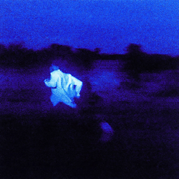
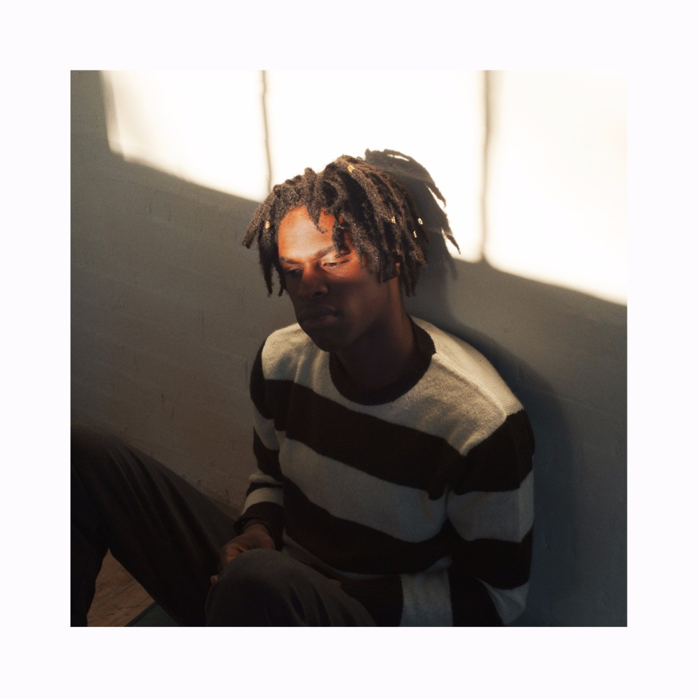

Daniel Caesar is a Canadian R&B and soul singer-songwriter from Toronto, Ontario, known for his smooth vocals and heartfelt song about love, faith, and relationships. He gained widespread recognition with his debut album "Freudian" in 2017, which included hit singles like "Get You" and "Best Part."
- Born: April 5, 1995 (age 28 years), Toronto, Canada
- Genres: R&B/Soul, Pop
- Instruments: Vocals, Guitar, Piano
- Years active: 2014–present
- Labels: Golden Child Recordings, Republic Records
Brief History
Daniel Caesar (real name Ashton Simmonds), is a Canadian born singer, song writer, and producer, who is known for his souful R&B, gospel and alternative music. He was born in Oshawa, Ontario, in 1995 but grew up in Toronto, Canada. He grew up in a religious household, which influenced his music style and themes. After being kicked out of his house by his religious parents at the age of 18, he began to pursue music more seriously. He started by uploading songs to YouTube and SoundCloud, often crashing at friends' places and recording.
Caesar's breakthrough came in 2014 with the release of his debut EP "Praise Break," which garnered attention for its unique blend of R&B, gospel, and soul, which showcased his emotional songwriting and smooth vocals. His big breakthrough came with his debut studio album "Freudian" in 2017, an album full of love faith and vulnerabilty. He received two Grammy nominations for Best R&B Album and Best R&B Performance for the song "Get You" (feat. Kali Uchis). He ended up winning the Grammy for "Best R&B Performance" for "Best Part" featuring H.E.R.
Following the success of "Freudian," Daniel Caesar continued to release music and collaborate with other artists. He released his second album "CASE STUDY 01" in 2019, further solidifying his place in the music industry. Known for his emotive performances and relatable themes, Daniel Caesar has become a prominent figure in contemporary R&B. Today, Daniel Caesar is recognized as one of the leading voices in modern R&B, known for his emotional honesty and smooth, timeless sound.
Top 5 songs
-

"Best Part (feat. H.E.R.)" - Freudian (2017) -
"Get You (feat. Kali Uchis)"- Freudian (2017) -

"Superpowers" - NEVER ENOUGH (Bonus Version) (2023) -

"Japanese Denim" - Get You - Single (2016) -
"Always" - NEVER ENOUGH (Bonus Version) (2023)